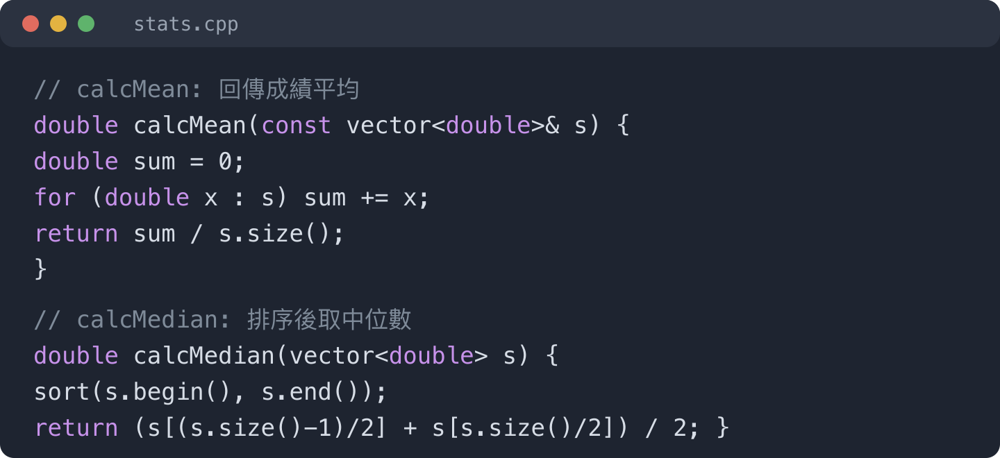
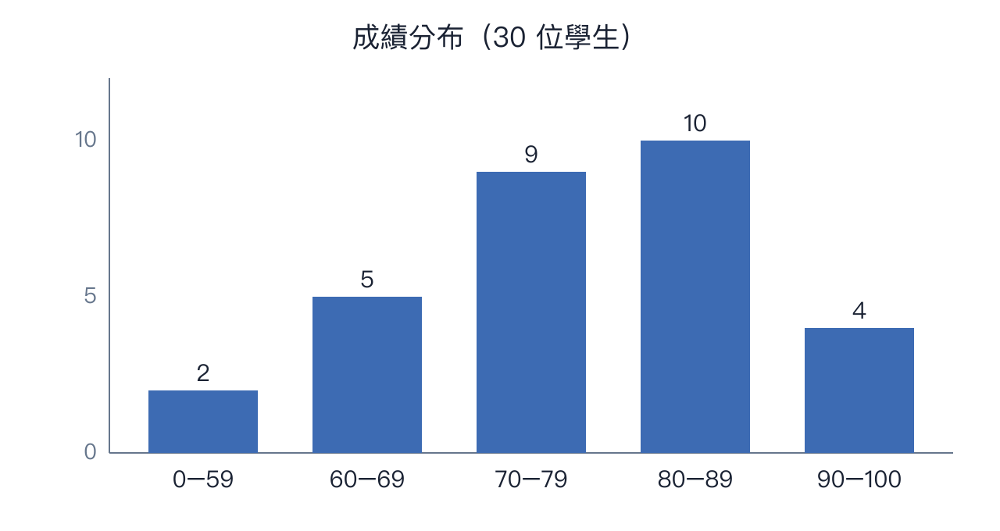

示範學生 A（合成資料，非真實學生）
1. 程式說明
2. 執行結果
3. 結果分析
4. 改進方向
本程式以 C++17 撰寫，只使用標準函式庫。
程式先讀取 scores.csv，把每位學生的成績存入 vector。
calcMean 計算平均，calcMedian 先排序再取中位數。
下一頁為主要函式的程式截圖。

終端機輸出如下：
讀入 30 筆成績
平均：78.4
中位數：80.0

長條圖顯示多數學生落在 70 到 89 分。
平均略低於中位數，表示有少數低分拉低平均。
本次作業完成了成績統計的主要功能。